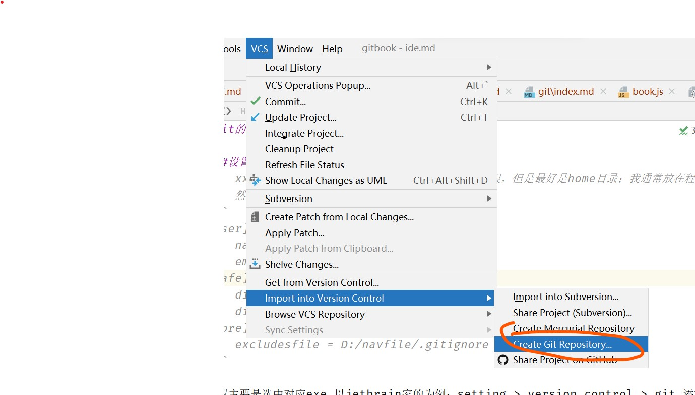

git的IDE设置与操作
设置忽略列表
xxx.ignore 名字并不重要，后缀一定，目录也不限，但是最好是home目录；我通常放在程序根目录；
然后在user/.gitconfig里面的内容如下
[user]
name = raptorzhang
email = raptorzhang@gmail.com
[safe]
directory = D:/navfile
directory = F:/gitcolontest/code-edit-online
[core]
excludesfile = D:/navfile/.gitignore
配置主要是选中对应exe,以jetbrain家的为例；setting > version control > git 添加exe VCS > Import Verion Control > Crearte Git Repository; 然后程序目录就会生成 .git配置目录；
拉取远程代码
新建项目，打开如图

添加一个远端的地址

把code里面的ssh填写，注意http会很卡

fetch一下，可以更新上面的远端节点

选择pull

选择要pull的远程分支

现在你的master上面就已经部署了远程端点的代码了

如果出现 refusing to merge unrelated histories
如果是这样的话就意味着，之前两个独立分支没有交集，需要用代码强制发生交集一下
$ git pull github-erp-ssh master --allow-unrelated-histories
From github.com:raptorzhang/erp
* branch master -> FETCH_HEAD
Merge made by the 'ort' strategy.